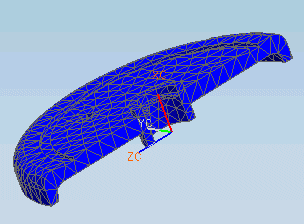

In this tutorial, you will use basic geometry idealization and abstraction commands to simplify a model in preparation for meshing. You will use the Split Body command to partition the model and then remove features from the geometry, including edge blends and a slot that are not significant to the analysis. You will then solve and analyze the results.
Launch the Geometry cleanup activity.